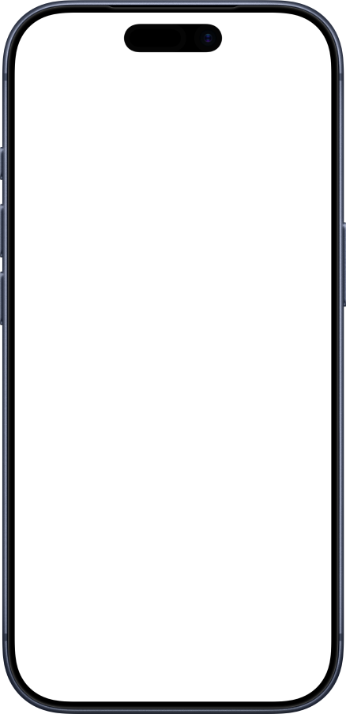

Self-hosted and always on. The session lives on your server — open it from your phone, your laptop, or let an AI agent run it through the night.

Why it's different
The session is on the server. The browser is just the window into it. Close it, switch devices, hand off to an AI — the work doesn't stop.
Glade was built so sessions survive — whether you're switching devices at midnight or letting Claude Code grind through a refactor while you sleep. The agent runs in Docker, isolated from your local machine. It only sees what's in the container. Start the job. Walk away. Pick it back up from anywhere.
Add to Home Screen on iOS or Android. Full-screen, no browser chrome. Launches from your dock like a native app.
tmux keeps every session alive on the server. Close the browser, come back later — exactly where you left it.
Toolbar with Esc, Tab, Ctrl, arrows, and combos. Long-press to repeat. Fully configurable — drag keys to reorder.
Each project gets its own tmux session and ttyd instance. Multiple shell tabs per project. Switch without losing context.
Every session recorded automatically via tmux pipe-pane. Browse and search the full output from the History tab — including everything an AI agent did while you were away.
Nothing runs on someone else's servers. No cloud, no accounts, no telemetry. Your code stays on your machine — especially relevant when that code is being touched by an AI.
Get started
You need Docker and an always-on host. A Mac Mini works great. Everything else is handled by the Makefile.
Copy the environment template and set your hostname.
git clone https://github.com/mattsimonis/glade-sh && cp .env.example .env
Generate a cert with mkcert glade.local and add the Caddyfile block to your reverse proxy. Add an A record for glade.local in Pi-hole or /etc/hosts pointing to your host's LAN IP.
make setup
Open https://glade.local. Tap Share → Add to Home Screen. Done.
Full walkthrough → SETUP.md